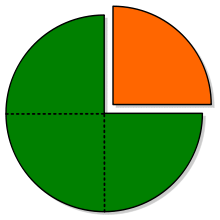
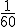

2.1 Concepto de fracción
|  |
|
Imagen de wikimedia commons por Canislupusarctos bajo CC |
En la actualidad se habla mucho del proceso de independencia de Cataluña, de cómo se fraccionaría España o de que solo una fracción de la población está a favor de dicho proceso. Precisamente el concepto de fracción da nombre a un procedimiento basado en dividir (fraccionar) algo en partes.
En matemáticas, cuando queremos expresar una parte de un total recurrimos a los números fraccionarios o fracciones.
Los elementos que forman la fracción, y que se escriben separados por una raya horizontal, son:
- El denominador. Es el número de abajo, indica el número de partes iguales en que se divide la unidad.
- El numerador. Es el número de arriba, indica la cantidad de esas partes que se toman.
¿Cómo leemos las fracciones?
Primero se lee el numerador como cualquier número, y a continuación el denominador de la siguiente manera:
- Si es 2, 3, 4, 5, 6, 7, 8, 9 se lee: medios, tercios, cuartos, quintos, sextos, séptimos, octavos y novenos.
- Si es 10 se lee décimos; si es mayor que 10 se lee el número añadiendo la terminación -avos.
Así, un minuto es un sesentavo de hora y se representa por  . Si tomamos cinco minutos, se lee como cinco sesentavos de hora, y se representa por  .
.
Importante
Una fracción también puede entenderse como el cociente de dos números. Es decir, es una división sin realizar. Donde el numerador es el dividendo y el denominador el divisor.
Luego, para saber cuál es el valor de una fracción deberíamos realizar esa división. Sin embargo, con la simple observación del numerador y del denominador podemos hacernos una idea de ese valor:
- Si el numerador es más pequeño que el denominador, entonces la fracción vale menos de 1.
- Cuanto más cerca esté el numerador del denominador más cerca estará el valor de 1.
- Si el numerador es mayor que el denominador, entonces la fracción vale más de 1.
En general, su valor será más grande cuanto mayor tenga el numerador, y será más pequeño cuanto mayor tenga el denominador.
En el siguiente applet, prueba a ordenar las fracciones siguiendo las directrices anteriores:
Escena de Eduardo Barbero Corral en Proyecto Descartes. Licencia CC
Caso práctico
María se ha comido 3 partes de un bizcocho que se había dividido previamente en 8 partes iguales.
a) ¿Qué fracción representa lo que se ha comido María?
b) ¿Y la parte de bizcocho que ha sobrado?
c) Representa cada una de las fracciones anteriores mediante un dibujo.
Para saber más
Ya hemos visto que entre las fracciones existe una relación de orden, por lo que se ubicar en la recta real
Vídeo de Fikima Aula Abierta alojado en Youtube
Actividad
Todo número que pueda ponerse en forma de fracción se dice que es un número racional.
Reflexión
¿Son los números enteros y naturales números racionales?
Curiosidad
LEGO es una empresa y marca de juguetes danesa reconocida principalmente por sus bloques de plástico que se conectan entre sí y permiten hacer construcciones.
Dada su popularidad, su fácil manejo y su atractivo visual, se pueden utilizar para ejemplificar situaciones matemáticas, tal y como se recoge en en este artículo que te enlazamos: Aprende Matemáticas con Lego. Concretando lo abstracto.
Te recomendamos el siguiente vídeo. Aunque las pocas palabras que aparecen están en inglés, solo la exposición te puede ayudar a comprender el concepto de fracciones equivalentes.